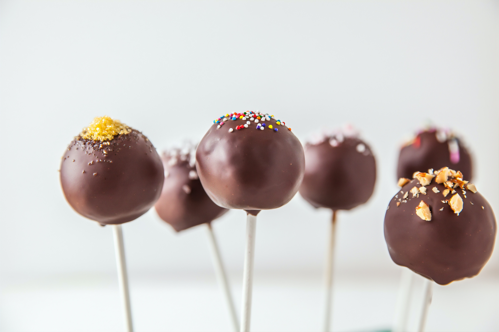

Chocolate Cake Pops

This cake pops recipe is a copycat of Starbucks’ birthday cake pop. If you’ve ever been to Starbucks you most likely saw their famous chocolate “birthday cake pops” through the glass of sweet goodies. This little treat is a combination of vanilla cake, frosting, and chocolate coating.
Ingredients
- 24 cake pop sticks
- cake pop former 11/4 inch in diameter or small cookie scoop
- deep narrow cup
- sprinkles
- Styrofoam
Cake
- 1 box Pillsbury classic white cake mix
- 2 tbsp Pillsbury creamy supreme vanilla frosting
Candy coating
- 1 12 oz bag Wilton candy melts
- 1 1/2 tsp Crisco shortening
Instructions
- Bake the cake according to the package and leg it cool down to room temperature.
- Cut the cake into 4 pieces and peel away the browned outside layer of the cake. I peel off the outer layer because it tends to be too dry to form the cake pop.
- In a large bowl, crumble the cake with your hands. Add 2 tbsp of frosting to the crumbled cake and mix with a spoon or your hands.
- Shape the cake into balls and place them into the cake pop former. Make sure the cake ball is a little bit bigger than the size of the press. Once the cake ball is pressed tightly, remove extra cake from the sides and roll the ball with your hands to smooth any imperfections.
- Melt about 1/4 cup of candy melts in a small bowl. Heat in 30 second intervals to avoid overheating the candy
- Dip the tip of each cake pop stick into the melted candy and poke it into to ball about half way through. Place each cake pop onto a baking sheet and transfer to the freezer for about 20 minutes.
- Meanwhile, melt the rest of the candy in a bowl. Make sure you melt them in 30 second intervals with mixing in between. Once it's melted well, add 1 1/2 tsp Crisco shortening and mix well with a whisk or fork. Then pour the melted candy into a tall narrow cup.
- Once the cake pops have been in the freezer for 20 min, dip each into the cup and tilt to the sides slowly to make sure the entire cake pop is covered. Then slowly pull up the cake pop. (Don't swirl the cake pop) Hold the cake pop in one hand and tap your wrist so that all the extra melted candy drips off.
- Sprinkle the pop right away so that the sprinkles stick to it before the candy hardens.
- Place in a Styrofoam block and let it stand for about an hour.